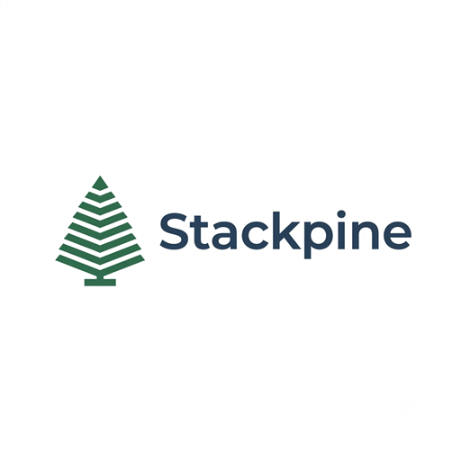

This is the ACE quiz — the Adverse Childhood Experiences questionnaire from the landmark CDC-Kaiser study, the same 10 questions behind the "childhood trauma test" videos you've seen online. Each question asks about something that may have happened before your 18th birthday. Answer yes or no, and you'll get your ACE score at the end with a plain-English explanation of what it does (and doesn't) mean.
This quiz is for self-reflection and education only. It is not a medical or psychological diagnosis, and a score — high or low — doesn't define you or predict your future.
Before your 18th birthday…
Your score is not your story. The ACE study measures risk across large populations — it can't predict any one person's life. Many people with high scores are healthy and thriving, and supportive relationships, community, counseling, and positive experiences measurably counteract early adversity at any age. If this quiz brought things up for you, talking to someone is a sign of strength, not weakness.
The ACE questionnaire comes from the CDC-Kaiser Permanente Adverse Childhood Experiences Study (1995–1997). This page is for education and self-reflection only — it is not a diagnostic tool and is not a substitute for advice from a qualified mental-health professional. Only your final screen is shown here; individual answers are never stored or transmitted.